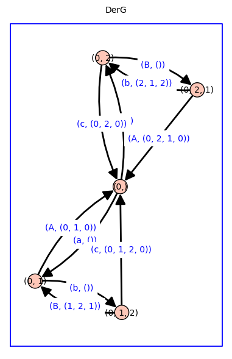
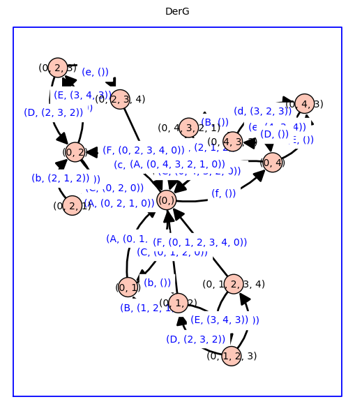

Derived Markov chains#
%%capture
%run receptor_tools_cycle_fluxes.ipynb
Example 1 - Cycle fluxes in the graph C3#
dG = dG_c3
G, Vg = graph_and_edge_ring_from_dict(dG)
nvG, neG, betaG, Tg, TG, cycleG_p, cycleG_m, cycleG_2, cycleG, Jg, dict_vG, inverted_dict_vG, d_cycleG, inverted_d_cycleG = cycle_flux_analysis(G,str='G')
[-C - a a C]
[ A -b - A b]
[ c B -B - c]
For root/cycle [0] : A*B + b*c + A*c
For root/cycle [1] : C*B + a*B + a*c
For root/cycle [2] : C*b + a*b + C*A
G cycles p: [(0, 1, 2, 0)]
G cycles m: [(0, 2, 1, 0)]
G cycles 2: [(0, 1, 0), (0, 2, 0), (1, 2, 1)]
G cycle flux 0 : a * b * c
G cycle flux 1 : C * A * B
G cycle flux 2 : a * A * (B + c)
G cycle flux 3 : C * (b + A) * c
G cycle flux 4 : (C + a) * b * B
DerG = derived_graph(G)
DerG.show(edge_labels=True,figsize=8,graph_border=True,title='DerG')

dict_Jg = cycle_fluxes_from_derived_graph(DerG,verbose=True)
rooted spanning tree of derived graph T(0,0) = (A*B + b*c + A*c) * (A*B + C*B + a*B + b*c + A*c + a*c + C*b + a*b + C*A)
J (0, 1, 0) = a * A * (B + c) * (A*B + b*c + A*c)
J (0, 1, 2, 0) = a * b * c * (A*B + b*c + A*c)
J (1, 2, 1) = a * b * B * (A*B + b*c + A*c)
J (0, 2, 0) = C * (b + A) * c * (A*B + b*c + A*c)
J (0, 2, 1, 0) = C * A * B * (A*B + b*c + A*c)
J (2, 1, 2) = C * b * B * (A*B + b*c + A*c)
Example 2 - Cycle fluxes in the House graph#
G, Vg = graph_and_edge_ring_from_dict(dG_house)
nvG, neG, betaG, Tg, TG, cycleG_p, cycleG_m, cycleG_2, cycleG, Jg, dict_vG, inverted_dict_vG, d_cycleG, inverted_d_cycleG = cycle_flux_analysis(G,str='G')
[-f - c - a a c 0 f]
[ A -b - A b 0 0]
[ C B -d - B - C d 0]
[ 0 0 D -e - D e]
[ F 0 0 E -E - F]
For root/cycle [0] : A*B*D*E + b*C*D*E + A*C*D*E + b*d*e*F + A*d*e*F + A*B*e*F + b*C*e*F + A*C*e*F + A*B*D*F + b*C*D*F + A*C*D*F
For root/cycle [1] : f*B*D*E + c*B*D*E + a*B*D*E + a*C*D*E + a*d*e*F + c*B*e*F + a*B*e*F + a*C*e*F + c*B*D*F + a*B*D*F + a*C*D*F
For root/cycle [2] : f*b*D*E + c*b*D*E + a*b*D*E + f*A*D*E + c*A*D*E + c*b*e*F + a*b*e*F + c*A*e*F + c*b*D*F + a*b*D*F + c*A*D*F
For root/cycle [3] : f*b*d*E + c*b*d*E + a*b*d*E + f*A*d*E + c*A*d*E + f*A*B*E + f*b*C*E + f*A*C*E + c*b*d*F + a*b*d*F + c*A*d*F
For root/cycle [4] : f*b*d*e + c*b*d*e + a*b*d*e + f*A*d*e + c*A*d*e + f*A*B*e + f*b*C*e + f*A*C*e + f*A*B*D + f*b*C*D + f*A*C*D
G cycles p: [(0, 1, 2, 0), (0, 2, 3, 4, 0), (0, 1, 2, 3, 4, 0)]
G cycles m: [(0, 2, 1, 0), (0, 4, 3, 2, 0), (0, 4, 3, 2, 1, 0)]
G cycles 2: [(0, 1, 0), (0, 2, 0), (0, 4, 0), (1, 2, 1), (2, 3, 2), (3, 4, 3)]
G cycle flux 0 : a * b * C * (D*E + e*F + D*F)
G cycle flux 1 : c * (b + A) * d * e * F
G cycle flux 2 : a * b * d * e * F
G cycle flux 3 : c * A * B * (D*E + e*F + D*F)
G cycle flux 4 : f * (b + A) * C * D * E
G cycle flux 5 : f * A * B * D * E
G cycle flux 6 : a * A * (B*D*E + C*D*E + d*e*F + B*e*F + C*e*F + B*D*F + C*D*F)
G cycle flux 7 : c * (b + A) * C * (D*E + e*F + D*F)
G cycle flux 8 : f * F * (b*d*e + A*d*e + A*B*e + b*C*e + A*C*e + A*B*D + b*C*D + A*C*D)
G cycle flux 9 : b * B * (f*D*E + c*D*E + a*D*E + c*e*F + a*e*F + c*D*F + a*D*F)
G cycle flux 10 : d * D * (f*b*E + c*b*E + a*b*E + f*A*E + c*A*E + c*b*F + a*b*F + c*A*F)
G cycle flux 11 : e * E * (f*b*d + c*b*d + a*b*d + f*A*d + c*A*d + f*A*B + f*b*C + f*A*C)
DerG = derived_graph(G)
DerG.show(edge_labels=True,figsize=8,graph_border=True,title='DerG')

dict_Jg = cycle_fluxes_from_derived_graph(DerG,verbose=True)
rooted spanning tree of derived graph T(0,0) = (A*B*D*E + f*B*D*E + c*B*D*E + a*B*D*E + b*C*D*E + A*C*D*E + a*C*D*E + f*b*D*E + c*b*D*E + a*b*D*E + f*A*D*E + c*A*D*E + f*b*d*E + c*b*d*E + a*b*d*E + f*A*d*E + c*A*d*E + f*A*B*E + f*b*C*E + f*A*C*E + b*d*e*F + A*d*e*F + a*d*e*F + A*B*e*F + c*B*e*F + a*B*e*F + b*C*e*F + A*C*e*F + a*C*e*F + c*b*e*F + a*b*e*F + c*A*e*F + A*B*D*F + c*B*D*F + a*B*D*F + b*C*D*F + A*C*D*F + a*C*D*F + c*b*D*F + a*b*D*F + c*A*D*F + c*b*d*F + a*b*d*F + c*A*d*F + f*b*d*e + c*b*d*e + a*b*d*e + f*A*d*e + c*A*d*e + f*A*B*e + f*b*C*e + f*A*C*e + f*A*B*D + f*b*C*D + f*A*C*D) * (A*B*D*E + b*C*D*E + A*C*D*E + b*d*e*F + A*d*e*F + A*B*e*F + b*C*e*F + A*C*e*F + A*B*D*F + b*C*D*F + A*C*D*F)^2
J (0, 1, 0) = a * A * (B*D*E + C*D*E + d*e*F + B*e*F + C*e*F + B*D*F + C*D*F) * (A*B*D*E + b*C*D*E + A*C*D*E + b*d*e*F + A*d*e*F + A*B*e*F + b*C*e*F + A*C*e*F + A*B*D*F + b*C*D*F + A*C*D*F)^2
J (0, 1, 2, 0) = a * b * C * (D*E + e*F + D*F) * (A*B*D*E + b*C*D*E + A*C*D*E + b*d*e*F + A*d*e*F + A*B*e*F + b*C*e*F + A*C*e*F + A*B*D*F + b*C*D*F + A*C*D*F)^2
J (1, 2, 1) = a * b * B * (D*E + e*F + D*F) * (A*B*D*E + b*C*D*E + A*C*D*E + b*d*e*F + A*d*e*F + A*B*e*F + b*C*e*F + A*C*e*F + A*B*D*F + b*C*D*F + A*C*D*F)^2
J (2, 3, 2) = a * b * d * D * (E + F) * (A*B*D*E + b*C*D*E + A*C*D*E + b*d*e*F + A*d*e*F + A*B*e*F + b*C*e*F + A*C*e*F + A*B*D*F + b*C*D*F + A*C*D*F)^2
J (0, 1, 2, 3, 4, 0) = a * b * d * e * F * (A*B*D*E + b*C*D*E + A*C*D*E + b*d*e*F + A*d*e*F + A*B*e*F + b*C*e*F + A*C*e*F + A*B*D*F + b*C*D*F + A*C*D*F)^2
J (3, 4, 3) = a * b * d * e * E * (A*B*D*E + b*C*D*E + A*C*D*E + b*d*e*F + A*d*e*F + A*B*e*F + b*C*e*F + A*C*e*F + A*B*D*F + b*C*D*F + A*C*D*F)^2
J (0, 2, 0) = c * (b + A) * C * (D*E + e*F + D*F) * (A*B*D*E + b*C*D*E + A*C*D*E + b*d*e*F + A*d*e*F + A*B*e*F + b*C*e*F + A*C*e*F + A*B*D*F + b*C*D*F + A*C*D*F)^2
J (0, 2, 1, 0) = c * A * B * (D*E + e*F + D*F) * (A*B*D*E + b*C*D*E + A*C*D*E + b*d*e*F + A*d*e*F + A*B*e*F + b*C*e*F + A*C*e*F + A*B*D*F + b*C*D*F + A*C*D*F)^2
J (2, 1, 2) = c * b * B * (D*E + e*F + D*F) * (A*B*D*E + b*C*D*E + A*C*D*E + b*d*e*F + A*d*e*F + A*B*e*F + b*C*e*F + A*C*e*F + A*B*D*F + b*C*D*F + A*C*D*F)^2
J (2, 3, 2) = c * (b + A) * d * D * (E + F) * (A*B*D*E + b*C*D*E + A*C*D*E + b*d*e*F + A*d*e*F + A*B*e*F + b*C*e*F + A*C*e*F + A*B*D*F + b*C*D*F + A*C*D*F)^2
J (0, 2, 3, 4, 0) = c * (b + A) * d * e * F * (A*B*D*E + b*C*D*E + A*C*D*E + b*d*e*F + A*d*e*F + A*B*e*F + b*C*e*F + A*C*e*F + A*B*D*F + b*C*D*F + A*C*D*F)^2
J (3, 4, 3) = c * (b + A) * d * e * E * (A*B*D*E + b*C*D*E + A*C*D*E + b*d*e*F + A*d*e*F + A*B*e*F + b*C*e*F + A*C*e*F + A*B*D*F + b*C*D*F + A*C*D*F)^2
J (0, 4, 0) = f * F * (b*d*e + A*d*e + A*B*e + b*C*e + A*C*e + A*B*D + b*C*D + A*C*D) * (A*B*D*E + b*C*D*E + A*C*D*E + b*d*e*F + A*d*e*F + A*B*e*F + b*C*e*F + A*C*e*F + A*B*D*F + b*C*D*F + A*C*D*F)^2
J (4, 3, 4) = f * e * E * (b*d + A*d + A*B + b*C + A*C) * (A*B*D*E + b*C*D*E + A*C*D*E + b*d*e*F + A*d*e*F + A*B*e*F + b*C*e*F + A*C*e*F + A*B*D*F + b*C*D*F + A*C*D*F)^2
J (0, 4, 3, 2, 0) = f * (b + A) * C * D * E * (A*B*D*E + b*C*D*E + A*C*D*E + b*d*e*F + A*d*e*F + A*B*e*F + b*C*e*F + A*C*e*F + A*B*D*F + b*C*D*F + A*C*D*F)^2
J (3, 2, 3) = f * (b + A) * d * D * E * (A*B*D*E + b*C*D*E + A*C*D*E + b*d*e*F + A*d*e*F + A*B*e*F + b*C*e*F + A*C*e*F + A*B*D*F + b*C*D*F + A*C*D*F)^2
J (0, 4, 3, 2, 1, 0) = f * A * B * D * E * (A*B*D*E + b*C*D*E + A*C*D*E + b*d*e*F + A*d*e*F + A*B*e*F + b*C*e*F + A*C*e*F + A*B*D*F + b*C*D*F + A*C*D*F)^2
J (2, 1, 2) = f * b * B * D * E * (A*B*D*E + b*C*D*E + A*C*D*E + b*d*e*F + A*d*e*F + A*B*e*F + b*C*e*F + A*C*e*F + A*B*D*F + b*C*D*F + A*C*D*F)^2